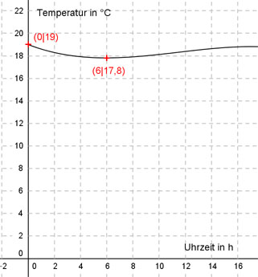

Aufgabe 129 Die Veränderung der Oberflächentemperatur eines Teiches während eines Tages kann nach langjähriger Beobachtung durch eine ganzrationale Funktion 3. Grades beschrieben werden. Messungen ergaben: Um 0.00 Uhr waren es 19°, um 6.00 war sie am niedrigsten mit 17,8° und um 17.00 war sie am höchsten. Zu welchem Zeitpunkt ist sie am stärksten gestiegen?  Allgemeine Form einer ganzrationalen Funktion 3. Grades: f(x) = ax3 + bx2 + cx + d f’(x) = 3ax2 + 2bx + c f’’(x) = 6ax + 2b 4 Bedingungen: 1. Um 0.00 Uhr waren es 19° bedeutet: f(0) = 19 --> a * 03 + b * 02 + c * 0 + d = 19 --> d = 19 2. Um 6.00 Uhr war sie am niedrigsten mit 17,8° bedeutet zum einen: (d = 19 eingesetzt) f(6) = 17,8 --> a * 63 + b * 62 + c * 6 + 19 = 17,8 --> 216a + 36b + 6c + 19 = 17,8 |-19 216a + 36b + 6c = -1,2 I 3. Um 6.00 Uhr war sie am niedrigsten mit 17,8° bedeutet zum anderen: f’(6) = 0 --> 3a * 62 + 2b * 6 + c = 0 --> 108a + 12b + c = 0 II 4. Um 17.00 Uhr war sie am höchsten: f’(17) = 0 --> 3a * 172 + 2b * 17 + c = 0 --> 867a + 34b + c = 0 III II * (-1) + III -108a - 12b - c = 0 867a + 34b + c = 0 -------------------- 759a + 22b = 0 IV I + II * (-6) 216a + 36b + 6c = -1,2 -648a - 72b - 6c = 0 ------------------------ -432a - 36b = -1,2 V IV * 36 + V * 22 27324a + 792b = 0 -9504a - 792b = -26,4 ---------------------- 17820a = -26,4 |:17820 a = -0,00148 a = -0,00148 in IV eingesetzt: 759 * (-0,00148) + 22b = 0 -1,123 + 22b = 0 |+1,123 22b = 1,123 |:22 b = 0,051 a = -0,00148 und b = 0,051 in I eingesetzt: 216a + 36b + 6c = -1,2 216 * (-0,00148) + 36 * 0,051 + 6c = -1,2 -0,32 + 1,836 + 6c = -1,2 1,516 + 6c = -1,2 |-1,516 6c = -2,716 |:6 c = -0,453 f(x) = -0,00148x3 + 0,051x2 - 0,453x + 19 Will man wissen, wann der stärkste Temperaturanstieg ist, braucht man die Tangenstensteigung f’(x) und zwar deren Maximum. f’(x) = -0,00444x3 + 0,102x - 0,453 Zur Bestimmung des Extremwertes die erste Ableitung von f’(x) (= zweite Ableitung der Ursprungsfunktion) gleich Null setzen --> Der Extremwert dieser ersten Ableitung = Wendepunkt der Ursprungsfunktion. f’’(x) = -0,00888x + 0,102 |-0,0102 0,00888x = - 0,102 |:-0,00888 x = 11,5 h --> 11.30 Uhr f’’’(x) = -0,00888 ist negativ --> ein Maximum liegt vor.